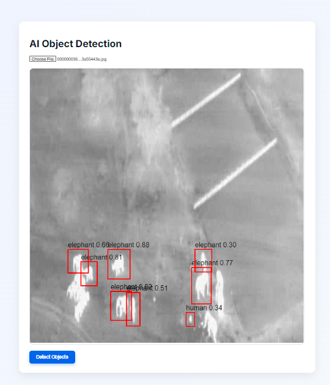
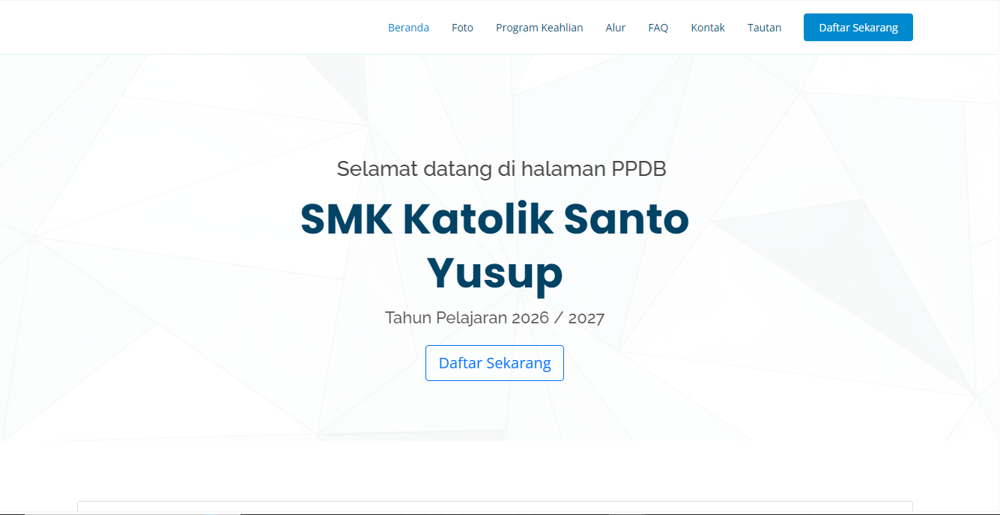
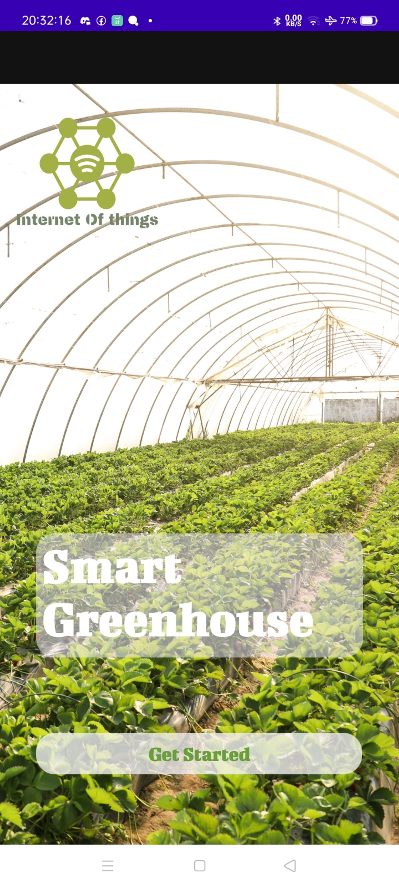

AI / ML

AI Object Detection
Real-time detection of humans and wildlife from aerial thermal imagery using YOLOv11, served through a FastAPI + React web interface.
Software developer experienced in building web and application systems including database design, system integration, and performance optimization. Focused on creating reliable and efficient digital solutions.
I'm a software developer with hands-on experience across the full stack from designing databases and building web platforms to integrating systems and optimizing performance. I've delivered admission & learning-management systems, IoT automation, and real-time AI object-detection pipelines.
My current focus blends modern web engineering with Artificial Intelligence and Computer Vision, where I researched human & wildlife detection using YOLO models for my Master's thesis.
The languages, frameworks and platforms I use to design, build and ship products.
A timeline of roles where I built products and grew as an engineer.
Developed and maintained web-based systems (PPDB, LMS, dashboards) using CodeIgniter and SQL, optimized databases, and supported network configuration and deployment.
Facilitated IT Support training, guided technical learning and troubleshooting, and supported course delivery to develop participants' IT skills.
Supported digital marketing campaigns, managed social media and content, tracked analytics performance, and assisted SEO/SEM to improve brand visibility.
Selected work across fullstack web, IoT automation and applied AI.

Real-time detection of humans and wildlife from aerial thermal imagery using YOLOv11, served through a FastAPI + React web interface.

Student admission and learning-management platform with role-based dashboards for administrators and students.

IoT automation for monitoring and controlling greenhouse conditions in real time using sensors and a live dashboard.
Academic foundation and highlights that shaped my work.
Focused on Artificial Intelligence & Computer Vision, with a thesis on human and animal detection using YOLO algorithms.
Built an IoT-based smart greenhouse integrating sensors and automation for real-time environmental monitoring and control.
Live contribution activity and language breakdown from my GitHub profile.
Have a project, role, or idea in mind? I'd love to hear about it.
Interested in working together, building AI systems, or developing digital solutions? Feel free to reach out — I usually reply within a day.
Emailyogiilham003@gmail.com Phone+62 858 3785 7570 LinkedInin/ahmad-yogi